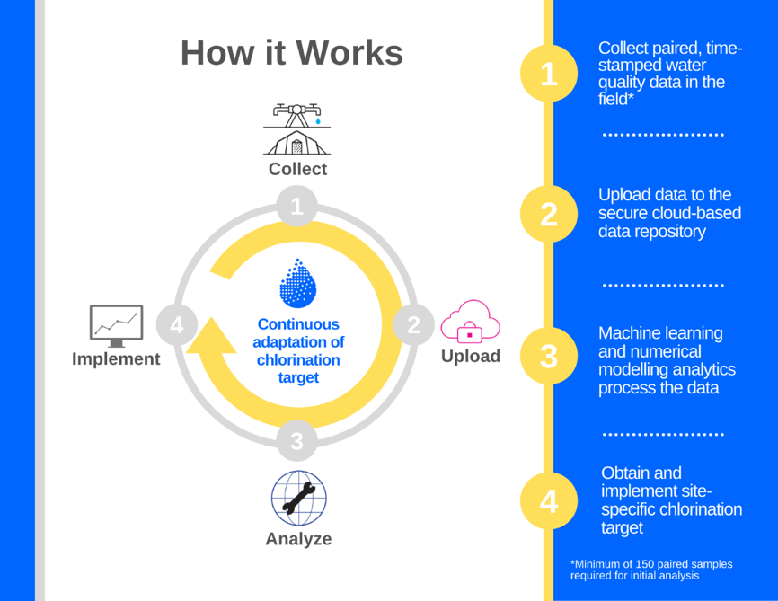

WHAT IS THE SWOT?
Waterborne diseases are among the leading causes of preventable mortality and morbidity during humanitarian crises. Safe water is essential for protecting public health in refugee and internally displaced persons camps. The Safe Water Optimization Tool helps humanitarian responders optimize water chlorination so that water remains safe to drink up to the point of consumption.
HOW DOES IT WORK?
The SWOT deploys innovative analytics based on machine learning and numerical modelling in order to unlock life-preserving information in routinely collected water quality monitoring data. It generates a site-specific, evidence-based free residual chlorine (FRC) target for water distribution points that ensures there is enough residual chlorine protection for the entire duration of household storage and use at any field site.

The SWOT builds on years of water safety research carried out in refugee camps in South Sudan, Jordan, Rwanda, Tanzania, Bangladesh (and elsewhere) by our team at York University, University of California Berkeley, MSF, and UNHCR. Foundational research for the SWOT can be found at:
Ali, S. I., Ali, S. S., & Fesselet, J. (2015). Effectiveness of emergency water treatment practices in refugee camps in South Sudan. Bulletin of the World Health Organization, 93(8), 550–558.
Ali, S. I. (2016). Validation Study Report: Evaluating New Evidence-Based FRC Targets at Mtendeli, Tanzania. MSF Field Research.
MSF OCA (2019). Field Guidance Note: Evidence-Based Guidance For Water Chlorination In Humanitarian Response. MSF Field Research.
SIGN UP
WANNA TRY IT OUT?
The SWOT beta is now live! Click here to check out the web tool and click here here to request a trial.
Our team is standing by to provide training and support to your team today. Let’s get safe water to the people who need it.
PROJECT TEAM
The SWOT is a collaboration between Médecins Sans Frontières / Doctors Without Borders (MSF) and the Dahdaleh Institute for Global Health Research at York University, Toronto.